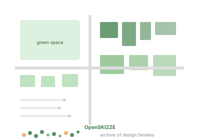
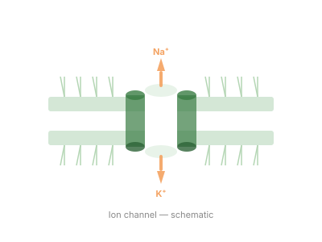
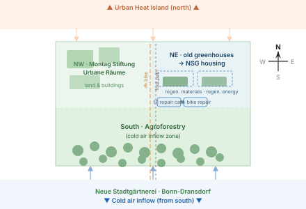
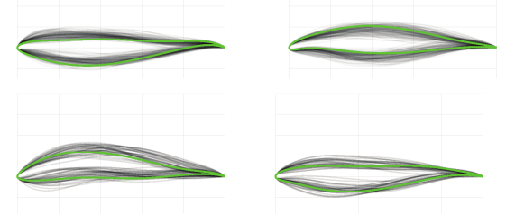
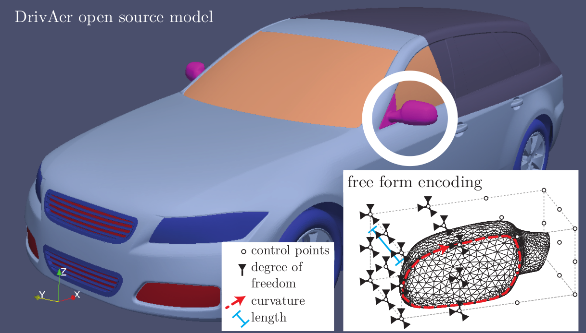

Case studies
Projects
Case studies spanning computational chemistry, urban climate, mobility, sports AI, robotics and generative art. OpenSKIZZE-Praxis is the newest follow-up to the OpenSKIZZE AI assistant.

OpenSKIZZE
An open-source AI assistant for climate-adapted urban planning — surrogate-assisted quality diversity optimization generates thousands of diverse design families, evaluated for cold airflow impact without costly CFD simulation.

OpenSKIZZE-Praxis
A DBU-funded follow-up that operationalizes OpenSKIZZE within formal municipal Bauleitplanung, developing climate-resilience building blocks for QGIS and GRASS GIS.

CytoTransport
In-silico modeling of cellular transport mechanisms — bridging biomedicine, computational modeling, and structural biology.
UMMBAS — Molecular Modelling for Bio-Chemical Applications
Interdisciplinary initiative combining computational chemistry, machine learning, and immersive VR visualisation to decode biochemical systems.

Neue Stadtgärtnerei
A grassroots initiative in Bonn-Dransdorf creating climate-resilient space for affordable housing, agroforestry, and environmental education.
DT4MP — DigitalTwin-4-Multiphysics Lab
Research lab combining urban digital twins with industrial multi-physics simulation, powered by AI and machine learning.
KISS-BIS — AI for Elite Sports
Systematic research into the mismatch between AI/ML methods and elite sports practice, bridging Big Data methods with small-data sports science.

AErOmAt — Surrogate-Assisted Aerodynamic Optimisation
Metamodel-assisted exploration and optimisation of aerodynamic shapes — developing surrogate-illumination methods that won two best paper awards.

DoVE — Evolutionary Design of Aerodynamic Vehicle Bodies
Evolving 3D aerodynamic velomobile bodies using neural indirect encodings and real-world drag analysis via computer vision.
ELaBoR — EV Charging Infrastructure Optimisation
Evolutionary optimisation of electric vehicle charging station placement for the Bonn / Rhein-Sieg region.
STELLA — Efficient Mobility for Electric Velomobiles
Energy-optimal driving strategies and human-machine hybridisation for electrically assisted velomobiles.

Spiegelmaschine
A generative art project trained on 1000 paintings by artist Steffen Terk — producing infinite visual variations in the painter's style.
Robotics & Robot Perception
From b-it-bots RoboCup@Home and ROS perception to the NIFTi EU search-and-rescue project — experimental work at the interface of simulation, optimization, and physical robot systems.
Playable prototypes
Try the four interactive prototypes: Preference Hunter, Cold Air, Binding Site, and Mirror Duet.